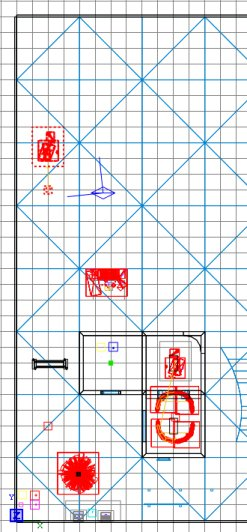
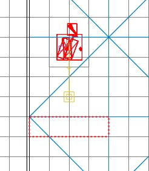
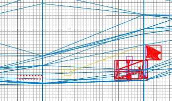
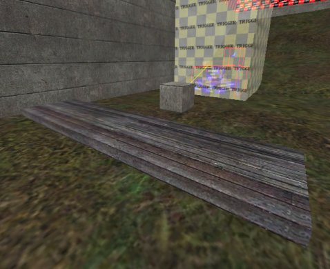
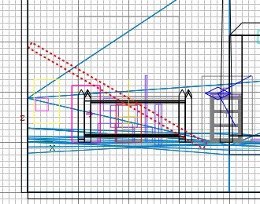
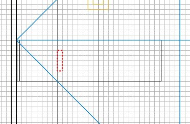
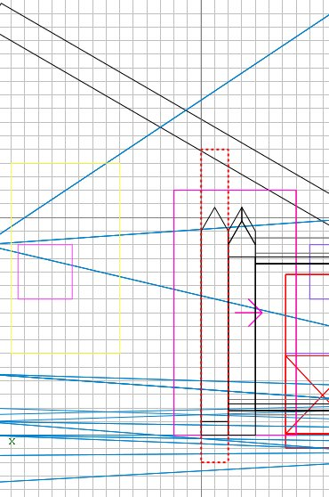
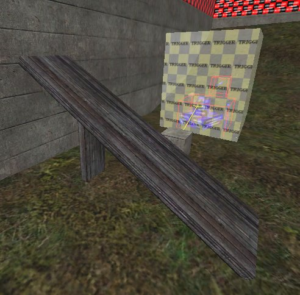
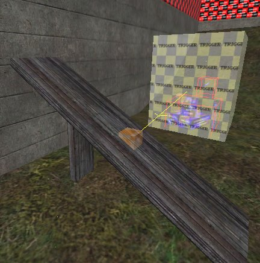

|
Run Radiant and open the map.
Import "_temp.map".
While it is still selected, drag it into
some space in the map, as shown: It
should already be at about the right height,
but in your own creations you'll need to
make sure the crates and surrounding trigger
are placed at the right height - the ramp
we'll build where we want it, so the little
box that is the template constructible can
go anywhere at the moment.

Press ESC. Let's make the
ramp. You could of course make
anything you like as a constructible, but
for this example we're going to make a very
simple wooden ramp.
Draw a brush as shown.

In the 2D side view, make it a reasonable
thickness for a wooden ramp. I used
grid size 4 and made it one notch thick.

We'll assume the ramp can be seen from
all angles, so there will be no caulked
surfaces. Therefore, make the whole
brush wooden by clicking on the wood_c01
texture in the textures window.
If the textures are aligned the wrong
way, press S and rotate them by 90 degrees,
and click Done.
Make the brush Detail and by now you
should have something like this:

Now we'll angle it and put it against the
wall. Select the brush and click
Selection/Rotate/Arbitrary Rotation, put
"30" in the "Y" box and
click OK. Remember to use nice round
degrees of rotation whenever possible - it
gets very nasty trying to get other elements to
line up if you don't.
Now slide the brush so that it rests
against the wall and on the surface of the
grass. The following image has models
filtered to make it easier to see.

Press ESC. You'll see that the
edges of the ramp now have misaligned
textures. Select the 2 affected faces,
press S, enter "-30" in the Rotate
Offset box and click done.
Press ESC. We'll add an upright
support. Draw a brush:

Caulk it and position/resize it as shown
so that it supports the ramp.

Press ESC then select the 4 visible faces
and make them the same wooden texture.
You should now have a ramp like this, ready
to be made into our constructible.

Select both ramp brushes, then
select the constructible box brush.
Right-click in the 2D and select "Move
into entity". You have now made
the ramp part of the constructible.
Press ESC. Select the box brush and
delete it. This will reveal the origin
brush inside it. The origin brush
tells ET roughly where the middle of the
constructible is deemed to be. Select
the origin brush and move it to the middle
of the ramp.

Press ESC. Prove that the origin
brush and both ramp brushes are now one
entity by shift+alt+clicking one of the
brushes in the 3D view - they should all be
selected.
Press ESC. Save and compile the
map, but don't go into ET yet - we have to
write the script to make it work.
Delete the "_temp.map" file, we
don't want that any more.
|